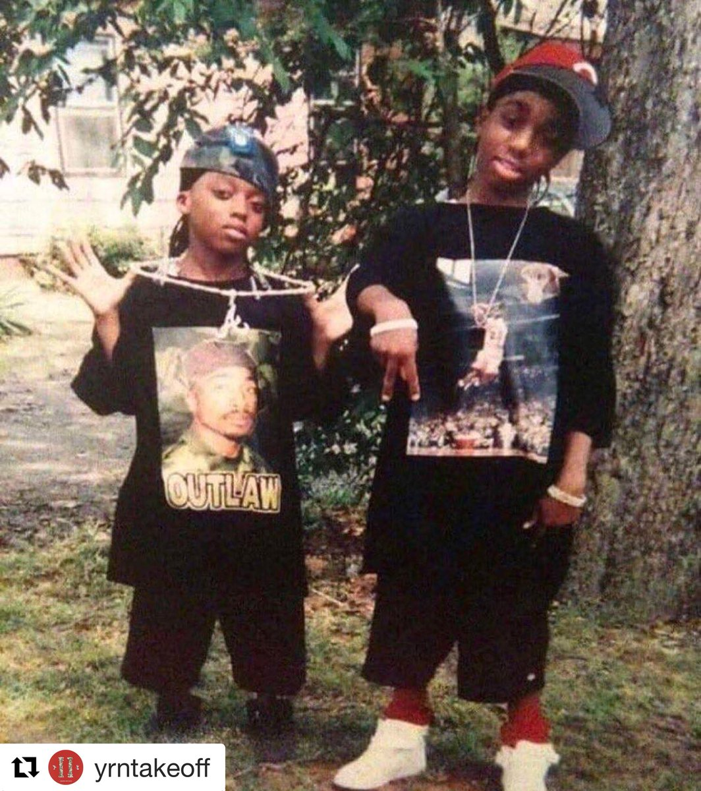

EARLY LIFE
Takeoff was born on June 18, 1994, in Lawrenceville, Georgia, where he was also raised by his mother, along with family members Quavo and Offset.
He started making beats and developing rhythms in the seventh grade, but did not start producing music professionally until 2011.

CAREER
2008–2018: Early work with Migos
Along with fellow family members Quavo and Offset, Takeoff began rapping in 2008.
The group initially performed under the stage name Polo Club, but eventually changed their name to Migos.
The group released their first full-length project, a mixtape titled Juug Season, on August 25, 2011.
They followed with the mixtape No Label, on June 1, 2012.
Migos initially rose to prominence after the release of their single "Versace", in 2013.
The song was remixed by Canadian rapper Drake and peaked at number 99 on the Billboard Hot 100 chart and number 31 on the Hot R&B/Hip-Hop Songs chart.
Their debut studio album, Yung Rich Nation, was released in July 2015, and featured guest appearances from Chris Brown and Young Thug, and production from Zaytoven and Murda Beatz.
The album peaked at number 17 on the Billboard 200.
Migos achieved their first number one single in 2016 with "Bad and Boujee" featuring Lil Uzi Vert, peaking on the Billboard Hot 100 during the week of January 21, 2017.
The song has gone on to be certified four times platinum by the Recording Industry Association of America (RIAA).
While he can be seen in one of the background scenes in the music video, Takeoff is not featured nor credited on the song.
Takeoff claimed that he was not featured on the song because he was busy at the time of recording.
During filming of Complex's Everyday Struggle at the BET Awards 2017, he was questioned about his absence by hosts Joe Budden and DJ Akademiks, to which he replied, "Do it look like I'm left off 'Bad and Boujee'?"
Takeoff's response caused Budden to leave the set, and an altercation between Migos and Budden and their entourages almost took place before it was broken up by security.
Takeoff (center) pictured performing with Migos, alongside Quavo (left) and Offset (right), in 2017
Migos' second studio album, Culture, was released on January 27, 2017, debuting at number 1 on the US Billboard 200, moving 131,000 album-equivalent units, including 44,000 copies sold, during its first week of release.
The album went on to achieve platinum certification in the country in July 2017.
The group's third album, Culture II, was released on January 26, 2018. It became Migos' second album to debut at number 1 on the Billboard 200, moving 199,000 equivalent units, including 38,000 copies sold, in its first week of release
2018–2021: The Last Rocket and later Migos work
Following the release of Culture II, on October 23, 2018, Takeoff announced an upcoming solo project titled The Last Rocket to be released the following month.
Two days after the announcement, he released his first single off the album, "Last Memory", along with the music video.The album was released on November 2, 2018.
The fourth Migos album, Culture III, was released on June 11, 2021. This would be the final Migos album released during Takeoff's lifetime.
2022: Friction within Migos and Only Built for Infinity Links
In October 2022, rumors surrounding a possible disbandment of Migos arose,based on reports that Quavo's ex-girlfriend Saweetie had slept with Offset.
Following this, Quavo and Takeoff released a collaborative album titled Only Built for Infinity Links on October 7, 2022, 25 days before Takeoff's death.